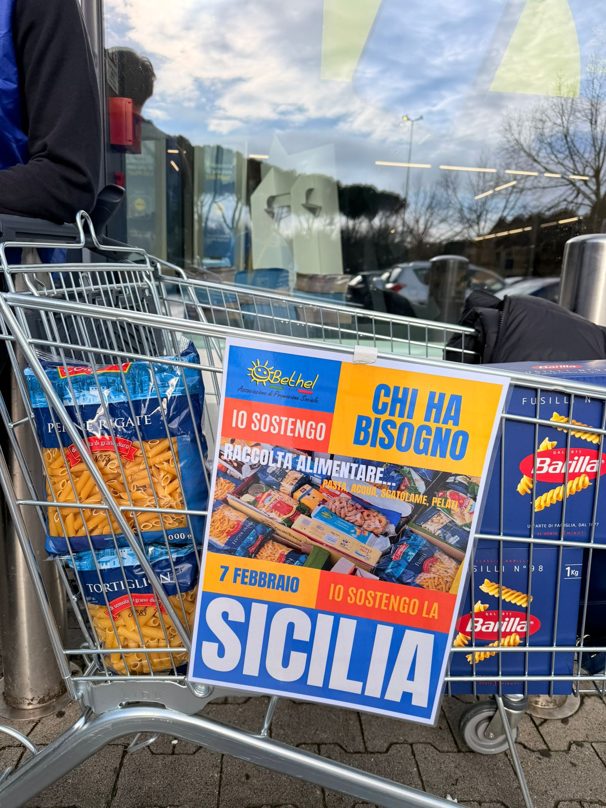

Volontariato Bethel Italia
Faccio volontariato con Bethel Italia da diverso tempo, ed è diventata una parte importante della mia vita. Non è solo un’attività che svolgo nel tempo libero, ma qualcosa che mi appassiona davvero. Attraverso questa esperienza ho capito quanto sia importante aiutare gli altri, anche con piccoli gesti. Il volontariato mi ha insegnato ad essere più empatica, paziente e attenta alle persone che mi stanno intorno. Per me Bethel Italia è un modo per sentirmi utile e per fare qualcosa di concreto per chi ha bisogno. È un’esperienza che mi fa crescere e che rifarei sempre, perché mi dà tanto sia a livello umano che personale.
